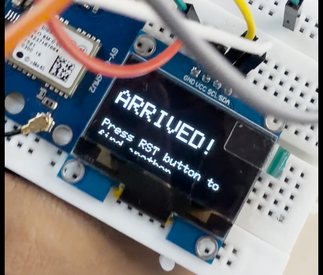

Can an ESP32 navigate waypoints without a magnetic compass?
Black Box · Magnetometer-Free GPS Waypoint Navigator

The Lock-On: When powered up, the device waits for a clear GPS signal. It then mathematically checks your distance against a saved list of coordinates and automatically targets the closest one.
The Calibration: Because it doesn't use a standard magnetic compass, the device initially doesn't know which way you are facing. It prompts you to “Start Walking.” Once you reach a normal walking pace, the GPS detects your physical trajectory and locks in your starting direction.
The Navigation: This is where the sensor fusion happens. An arrow appears on the screen pointing directly toward your destination.
If you are standing still and turning around, the internal gyroscope smoothly rotates the arrow to match your hand movements.
When you are walking, the GPS secretly checks your heading in the background and corrects the gyroscope so the arrow never drifts off course.
The Arrival: Once you are within 15 meters of your target, the screen announces that you have arrived. A simple press of the physical reset button clears the memory and starts the cycle over to find the next nearest location.

Everything that goes inside · ESP32-C3 Supermini, NEO-6M GPS & MPU6050
MADE WITH
- ESP32-C3 Supermini
- NEO-6M GPS (UART 9600)
- MPU6050 6-Axis IMU (Raw I2C)
- 1.3" OLED (SH1106 Driver)
- 5V Power Source